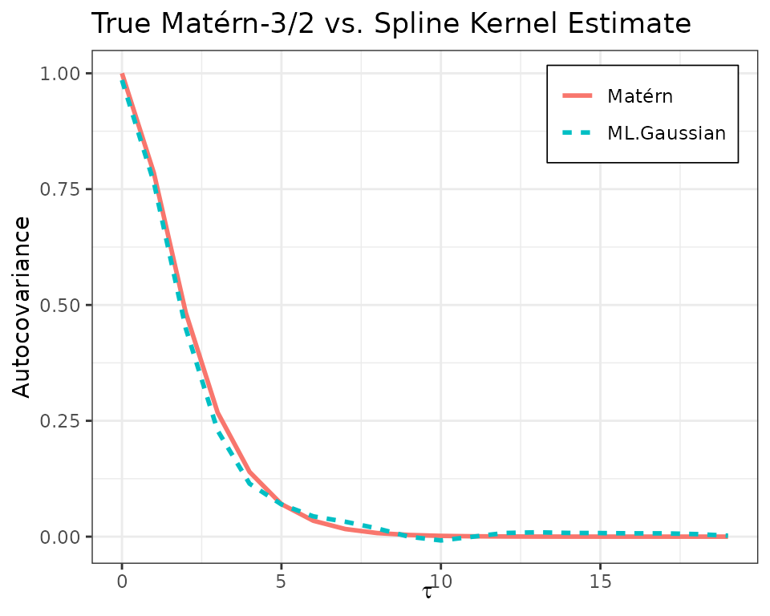

ML with Gaussian Likelihood
ml_gaussian.RmdWe begin by illustrating a simple example of fitting an ACF to
simulated time-series data using maximum likelihood. We simulate a
stationary Gaussian process with a known Matérn-3/2 auto-covariance
structure. Then, we fit an auto-covariance model using the
bskernel package, assuming linear
()
B-spline spectral basis. The resulting estimated ACF is compared to the
true model.
In what follows, as we sample our data regularly, we use Toeplitz tricks to speed matters up. Generalising to non-regular data is trivial, it will just take longer for the optimiser to compute.
Simulate a Gaussian process with known autocovariance
Most of this is standard; we lean on the package
SuperGauss to efficiently sample the GP and set
fft = FALSE so that this sample is an exact draw.
library(bskernel)
library(dplyr)
library(SuperGauss)
matern32_cov <- function(d, range, sigma2) {
sqrt3_d <- sqrt(3) * d / range
sigma2 * (1 + sqrt3_d) * exp(-sqrt3_d)
}
n <- 2000
n_knots <- 4
range <- 2
k <- 1
b <- 0.1
tau <- 0:(n - 1)
mat32_acf <- matern32_cov(tau, range, sigma2 = 1)
y <- SuperGauss::rnormtz(n = 1, mat32_acf, fft = FALSE)Estimate the ACF using spline kernels
There are a couple of things to note here. First, the data are
sampled regularly with spacing 1, so the Nyquist frequency is 0.5. We
extend the knot spacing past this as we are using linear basis. Same
with the first knot, we are creating a symmetry about 0. Next,
optim_toeplitz_mle is optimising over the log space of the
parameters, hence why we must exponentiate the optimiser output.
Constraining the parameters to be positive like this is a sufficient but
not necessary condition to yield a positive semi-definite estimate.
Finally, the easiest way to symmetrise the bases defined by the knots is
to just take the real values.
The plot of the estimated vs true ACF is given below.
knots <- c(-0.05, 0, 0.05, 0.1, 0.2, 0.3, 0.5, 0.7)
c_init <- c(0.3, 0.2, 0.15, 0.15, 0.1, 0.1)
log_c_mle <- optim_toeplitz_mle(c_init, knots, k, y)$par
c_mle <- exp(log_c_mle)
acf_est <- reconstruct_acf(c_mle, knots, k, tau) %>% Re()
Gradient of the Toeplitz Representation
Warning: mathematical details not required to run the code.
This optimisation runs efficiently in part as we have baked in the
gradient using the Toeplitz representation of the likelihood. See
compute_toeplitz_loglik_grad if you want to unpack
this.
Let be a zero-mean stationary Gaussian process with Toeplitz covariance matrix where is a symmetric Toeplitz matrix defined by the autocovariance vector . We model each autocovariance entry as where
- are coefficients,
- is the inverse Fourier transform of the -th B-spline spectral basis function (eqn 5 of the paper).
The log-likelihood is
Apply the chain rule,
From standard matrix calculus,
where
is the Toeplitz matrix with 1s on the
-th
(symmetric) off-diagonal, and 0 elsewhere. In practice, this is
efficiently handled by the SuperGauss::NormalToeplitz
class. Since,
the Jacobian
has entries
Putting it together,
In code, SuperGauss
handles this all beautifully with
grad <- nt$grad(z = y, dz = matrix(0, n, n_basis), acf = rho, dacf = dacf)Lastly, if we optimise over the log-parameters , the chain rule gives and so in code,
grad_theta <- grad * c